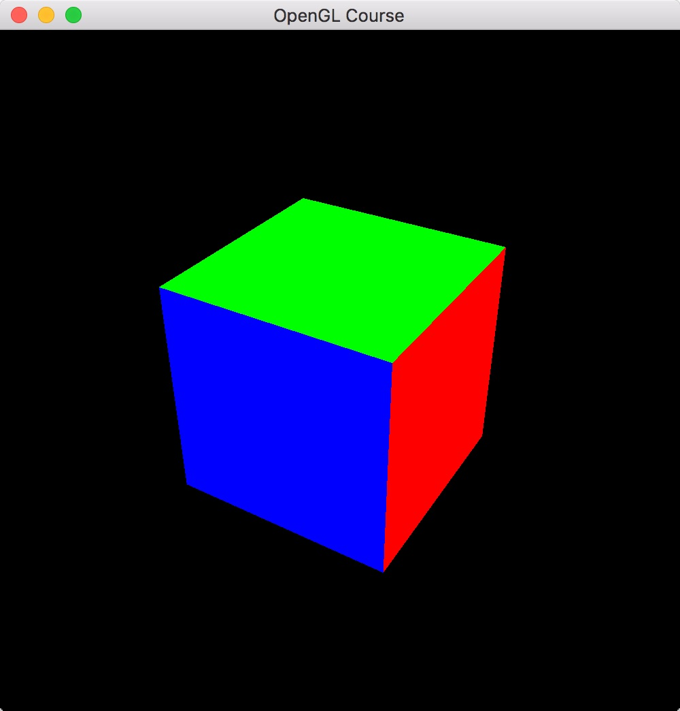

5. 深度テスト  ¶
¶
5.1. 深度テストとは？¶
前回、第4回の最後で描画した結果は立方体の面の前後関係が間違ったものでした。 これを正しい順番に直す処理が深度テストです。
深度テストは後に示す通り、OpenGL上で行うのは非常に簡単です。ですが、 ここでは、その深度テストの方法について簡単に触れておきます。
5.2. Z-バッファ法¶
深度テストのやり方は1通りではなく、複数のやり方が提案されています。OpenGLで採用されている 深度テストの方法はこれから説明するZ-バッファ法ですが、それ以外にも有名なものにレイトレースや スキャンライン法などの方法があります。興味のある人はこちらについても調べてみてください。
さて、肝心のZ-バッファ法のやり方ですが、これは非常にシンプルな方法です。 これまでは三角形を描画するときに、三角形の色を画素に保存していました。 この描画を行っていた画素情報の格納先をカラーバッファと呼びます。 それとは対照的に、色ではなく深度の値を保存しておくバッファをZ-バッファあるいは深度バッファと呼びます。
Z-バッファ法を使った深度テストではカラーバッファ以外に上記のZ-バッファを用意しておき、 三角形を描画するたびに、その三角形の各画素に対応する場所がどのくらいの深度値を持つのかを保存しておきます。 新しい三角形が描画されるときには、その時に画素に格納されている深度の値と、これから描画される三角形の 深度とを比較して、より手前にあれば描画、そうでなければ描画しないということを行います。
こうすることで、最終的には一番手前にある三角形だけが描画されることになります。 なお、このように手前にある三角形により後ろにある三角形を隠して描画することを 専門的には「隠面消去」と呼びます。
5.3. OpenGLでの深度テスト¶
OpenGLで深度テストをするための方法はいたって簡単です。 コードの変更箇所は主に2つあります。
まずは、深度テストの有効化です。これは glEnable 関数に GL_DEPTH_TEST を渡すことで実現できます。
1 | glEnable(GL_DEPTH_TEST)
|
上記の呼び出しをOpenGLの初期化コード(このコースでは initializeGL 関数)の中で呼ぶだけです。
続いて、描画をするときのZ-バッファの初期化が必要です。これまで glClear 関数には
GL_COLOR_BUFFER_BIT という定数が渡されていましたが、これがカラーバッファの初期化に対応しています。
Z-バッファを初期化するためには、これに加えて GL_DEPTH_BUFFER_BIT という定数を渡す必要があるのですが、
この場合には、 GL_COLOR_BUFFER_BIT と GL_DEPTH_BUFFER_BIT のORを取って
1 | glClear(GL_COLOR_BUFFER_BIT | GL_DEPTH_BUFFER_BIT)
|
のように呼び出してあげます。
前回のコードに上記の書き換えを加えることで、下のような正しい画像が表示されるようになるはずです。
{kind=link}